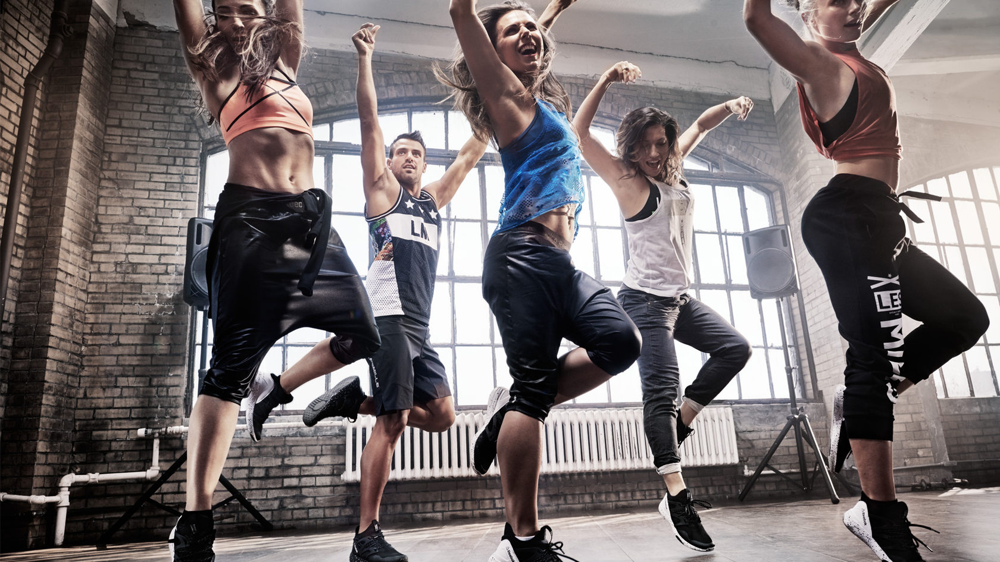

Еще в детстве каждому из нас, что-то становится интереснее другого. Каждый выбирает для себя какое-то увлечение, которое станет для кого-то смыслом жизни, а для кого-то так и останется просто увлечением. Я в свою очередь выбрала ни рисование, ни вокал, ни радиотехнику, ни игру на музыкальных инструментах, ни легкую атлетику, ни гимнастику. Все, что мне надо было — это ТАНЦЫ. У меня есть 5 конкретных причин, почему я выбрала именно их .
